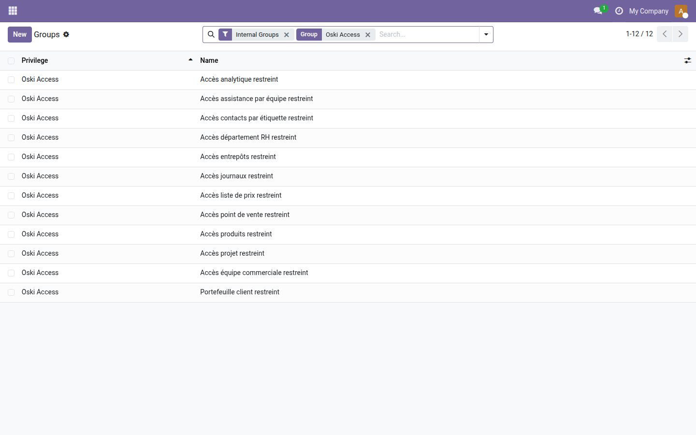
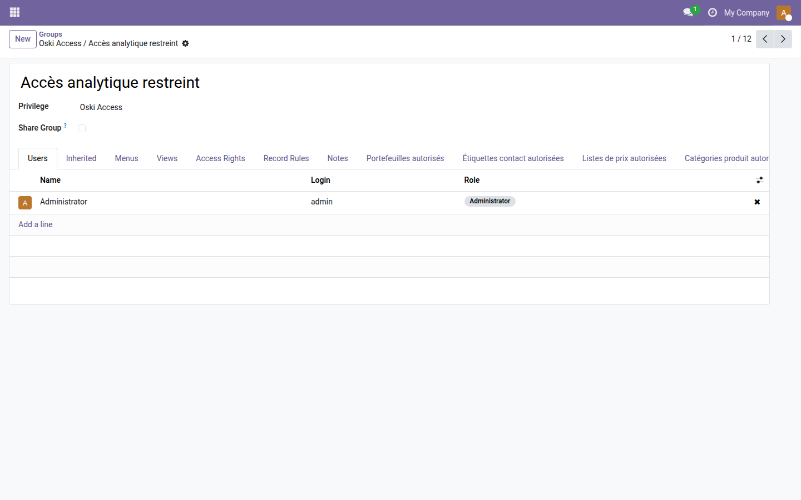

Oski Access Core
Le socle commun qui structure tous vos contrôles d'accès par dimension dans Odoo Community.
Odoo Community ne permet pas de restreindre l'accès à une dimension précise — un journal comptable, un entrepôt, un département RH, une équipe commerciale — pour un utilisateur ou un groupe donné. L'administrateur est contraint de choisir entre tout ouvrir ou tout verrouiller, sans granularité intermédiaire. Ce module pose les fondations partagées qu'utilisent tous les modules de sécurité par dimension OdooSkills : une seule installation suffit pour activer n'importe quel add-on pro de la suite.
Ce que ça apporte
- 🔒 Mixin d'accès réutilisable — structure commune utilisateur ou groupe, niveau lecture seule ou accès complet, partagée par tous les modules de la suite.
- ⚡ Résolution intelligente des niveaux — les droits personnels et ceux hérités des groupes sont agrégés automatiquement ; le niveau le plus permissif s'applique.
- 🧩 Catégorie et privilège Odoo 19 — les groupes de sécurité de chaque add-on sont organisés proprement sous la catégorie "Oski Access" dans les paramètres utilisateur.
- 📊 Socle pour 16 modules pro — chaque add-on dimension (journal, entrepôt, département, équipe…) hérite directement de ce cœur sans dupliquer de code.
Aperçus réels
1. Les 12 groupes de la suite organisés sous le privilège Oski Access
Une installation suffit pour voir apparaître la catégorie Oski Access dans la liste des groupes Odoo — chaque add-on pro vient ensuite ajouter son propre groupe dans cette structure.

Utilisateurs > Groupes" style="max-width:100%;border-radius:8px;border:1px solid #e5e7eb;box-shadow:0 4px 14px rgba(0,0,0,.07);margin:0 0 20px;"/>
2. Détail d'un groupe — le Privilège Oski Access en action
Chaque groupe créé par un add-on pro (ici Accès analytique restreint) est rattaché au privilège Oski Access défini par ce socle, garantissant une navigation cohérente dans les paramètres utilisateur.

Pourquoi l'adopter
- ✅ Gratuit (LGPL-3) — il ne coûte rien et débloque l'ensemble de la suite Sécurité par dimension.
- 🔒 Prérequis unique — un seul module à installer pour activer n'importe quel add-on pro de la suite : journaux, entrepôts, départements, équipes commerciales, catégories contacts, projets, PdV…
- ⚡ Aucun surcoût technique — modèle abstrait sans table en base, impact nul sur les performances tant qu'aucun add-on pro n'est activé.
- 📊 Architecture propre — la logique de résolution des niveaux d'accès est centralisée ici, testée une seule fois, et fiable pour tous les modules qui en dépendent.
Fait partie de la suite Sécurité par dimension
Ce socle est le prérequis de 16 add-ons pro, chacun restreignant l'accès selon une dimension métier :
- oski_account_journal_security — restriction par journal comptable
- oski_hr_department_security — restriction par département RH
- oski_sale_team_security — restriction par équipe commerciale
- oski_stock_location_security — restriction par emplacement de stock
- oski_cost_margin_security — masquage du coût et de la marge
- et 11 autres dimensions (analytique, catégorie contact, projet, PdV, liste de prix…)
Voir la suite complète sur apps.odooskills.com.
Licence LGPL-3 — gratuit, compatible Odoo 19.0. Support : apps@odooskills.com.